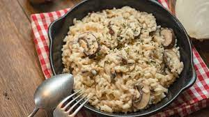

Mixed Mushroom Risotto

Description
A friend of mine, an experienced mushroom forager, gave me a jar of her
porcini mushroom powder. It's like brown gold! I added it to my usual mushroom risotto
and I must say, it's the best mushroom risotto I've ever made.
- 1 tablespoon porcini mushroom powder
- 4 tablespoons olive oil, divided
- 1 shallot, finely chopped
- 4 cups low-fat chicken broth
- Bring chicken broth to a simmer in a large saucepan over
medium heat. Whisk in mushroom powder. Cover, lower heat,
and keep at a simmer until needed for risotto.
- Meanwhile, heat 2 tablespoons olive oil in another large
saucepan over medium-low heat. Add shallot and cook,
stirring often, until soft but not browned, 3 to 5 minutes.
Add rice and bay leaf and stir until evenly coated. Increase
heat to medium and cook until rice releases a nutty smell and
looks glassy, 2 to 3 minutes. Add wine and 1/4 cup of simmering
broth. Cook, stirring constantly, until all liquid has been
absorbed.
Back